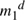
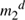
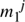
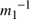
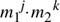

| 1. | In mod n arithmetic why does x have a multiplicative inverse if and only if x is relatively prime to n? |
| 2. | In section §6.4.2 Defenses Against Man-in-the-Middle Attack, it states that encrypting the Diffie-Hellman value with the other side's public key prevents the attack. Why is this the case, given that an attacker can encrypt whatever it wants with the other side's public key? |
| 3. | In RSA, is it possible for more than one d to work with a given e, p, and q? |
| 4. | In RSA, given that the primes p and q are approximately the same size, approximately how big is φ(n) compared to n? |
| |
| 5. | In DSS, other than saving users the trouble of calculating their own p, q, and g, why is there an efficiency gain if the value of p, q, and g are constant, determined in the specification? |
| 6. | What is the probability that a randomly chosen number would not be relatively prime to some particular RSA modulus n? What threat would finding such a number pose? |
| 7. | How would you modify ElGamal to operate with a smaller exponent like DSS? |
| 8. | Suppose Fred sees your RSA signature on m1 and on m2 (i.e. he sees

mod n and

mod n). How does he compute the signature on each of

mod n (for positive integer j),

mod n, m1·m2 mod n, and in general

mod n (for arbitrary integers j and k)? |
| 9. | Suppose we have the encoding that enables Carol to mount the cube root attack (see §6.3.5.2 The Cube Root Problem). If Carol sends a message to Bob, supposedly signed by you, will there be anything suspicious and noticeable about the signed message, so that with very little additional computation Bob can detect the forgery? Is there anything Carol can do to make her messages less suspicious? |
| 10. | In ElGamal, how does knowing the secret number used for a signature reveal the signer's private key? How do two signatures using the same secret number reveal the signer's private key? [Hint: p-1 is twice a prime. Even though not all numbers have inverses mod p-1, division can still be performed if one is willing to accept two possible answers. (We're neglecting the case where the divisor is (p-1)/2, since it is extremely unlikely.)] |
| 11. | Transform the graph isomorphism scheme described in §6.8 Zero Knowledge Proof Systems into a signature scheme. Make an estimate of how large a signature would need to be. |